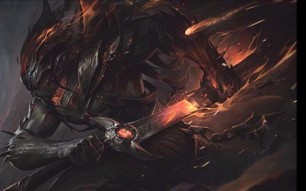

各位召唤师们；
疾风剑豪·亚索，是MOBA竞技网游《英雄联盟》中第117位登场的英雄角色，英雄定位为战士、刺客 亚索是一位近战爆发AD刺客， 双突进的技能设置使得他在中单游刃有余，并且大招在队友的配合下，在团战中能够发挥至关重要的作用。

技能如下
技能Q；向前出剑，造成物理伤害。 在命中时，斩钢闪会获得层旋风烈斩效果， 持续6秒。在积攒2层旋风烈斩效果后，斩钢闪会形成一阵能够击飞 敌人的旋风。 斩钢闪被视为普通攻击：它可以暴击，附带攻击特效，会被控制效果所中断，并且它的冷却时间和施法时间都会从攻击速度上获 得收益。 如果在突进的过程中施放斩钢闪，那么斩钢闪就会呈环状出剑。
技能W；形成一个持续4秒的气流之墙，来阻挡敌方的飞行道具。
技能E；向目标敌人突进，造成(60/70/80/90/100 +60%AP +20%额外AD)魔法伤害。每次施法都会使你的下一次突进的基础伤害提升25%，最多提升至50%。 在10秒内无法对相同敌人重复施放。 如果在途径的过程中施放斩钢闪，那么斩钢闪就会呈环状出剑。
技能R；闪烁到一个浮空的敌方英雄身边，造成(200/350/500 +150%额外AD)物理伤害，并使范围内的所有浮空的敌人在空中多停留1秒。 获得满额的剑意值，但会重置旋风 烈斩的层数。 在接下来的15秒里，亚索的暴击会获得50%的额外护甲穿透加成——这个效果能够 无视目标的来自装备、增益、符文的护甲值。